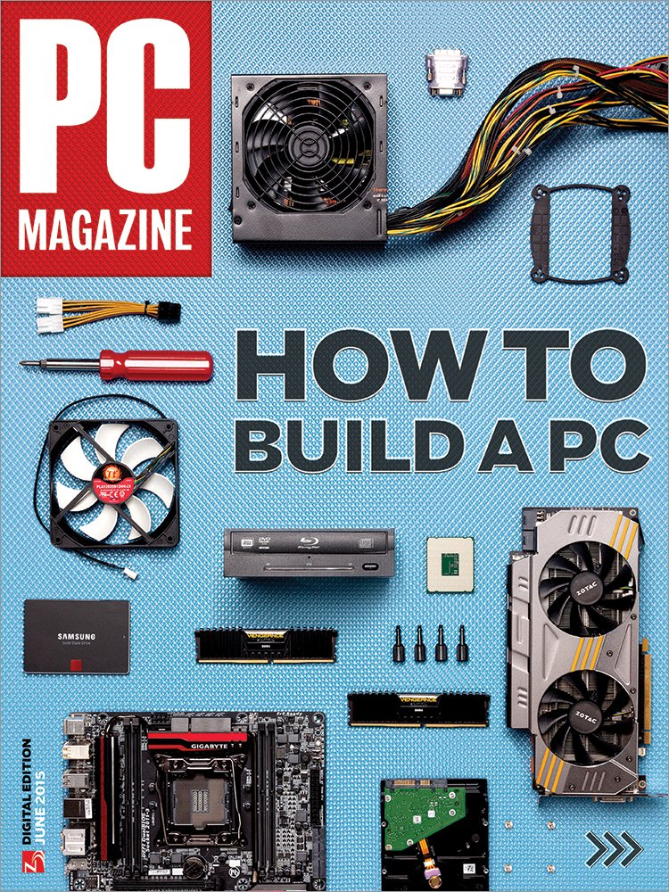

IGN
IGN (theo tên viết tắt của tên cũ của là Imagine Games Network) là một trang web về phương tiện giải trí trò chơi video do IGN Entertainment Inc ., một công ty con của Ziff Davis, Inc điều hành. Công ty có trụ sở tại quận SoMa San Francisco và do cựu tổng biên tập viên Peer Schneider lãnh đạo. Trang web IGN là sản phẩm trí tuệ của doanh nhân Chris Anderson và ra mắt vào ngày 29 tháng 9 năm 1996. Trang tập trung vào trò chơi, phim, truyền hình, truyện tranh, công nghệ và các phương tiện truyền thông khác. Ban đầu là một mạng lưới các trang web máy tính để bàn, IGN hiện cũng được phân phối trên các nền tảng di động, các chương trình trên Xbox và PlayStation, FireTV, Roku, thông qua YouTube, Twitch, Hulu và Snapchat.
Ban đầu, IGN là trang web hàng đầu của IGN Entertainment , một trang web sở hữu và vận hành một số trang web khác hướng đến sở thích, trò chơi và giải trí của người chơi, chẳng hạn như Rotten Tomatoes, GameSpy, GameStats, VE3D, TeamXbox, Vault Network, FilePlanet và AskMen. IGN đã được bán cho công ty xuất bản Ziff Davis vào tháng 2 năm 2013 và hiện hoạt động như một công ty con của J2 Global.
Tháng 9 năm 1996, giám đốc điều hành xuất bản Jonathan Simpson-Bint thành lập trang mạng chuyên về nội dung trò chơi điện tử với tên Imagine Games Network, sau này là IGN , và bắt đầu như một trong năm trang web riêng lẻ của Imagine Media: N64.com (sau đổi tên thành ign64.com), PSXPower, Saturnworld, Next-Generation.com và Ultra Game Players Online. Imagine mở rộng trên các trang web được sở hữu và vận hành bằng cách tạo một mạng liên kết bao gồm một số trang dành cho người hâm mộ độc lập nhưPSX Nation.com, Sega-Saturn.com, Game Sages, và GameFAQs.
Năm 1998, mạng ra mắt một trang chủ mới, hợp nhất các trang web riêng lẻ dưới dạng các kênh hệ thống dưới thương hiệu IGN . Trang chủ tổng hợp nội dung từ hơn 30 kênh khác nhau. Next-Generation và Ultra Game Players Online không thuộc sự hợp nhất này; U.G.P.O. đã giải thể với việc hủy bỏ tạp chí và Next-Generation được "tạm dừng" khi Imagine quyết định tập trung vào việc ra mắt thương hiệu Daily Radar, cũng tồn tại trong thời gian ngắn.

Tháng 2 năm 1999, PC Magazine vinh danh IGN là một trong những trang web tốt nhất, cùng với các đối thủ cạnh tranh là GameSpot và CNET Gamecenter. Cùng tháng đó, Imagine Media đã kết hợp một spin-off bao gồm IGN và các kênh liên kết của nó thành Affiliation Networks, trong khi Simpson-Bint vẫn ở công ty cũ. Đến tháng 9, công ty ra mắt một công ty truyền thông internet độc lập, đổi tên thành Snowball.com. Đồng thời, trang web giải trí nhỏ là The Den đã hợp nhất thành IGN và thêm những nội dung không chơi game vào trang mạng đang phát triển. Snowball đã tổ chức IPO vào năm 2000, nhưng loại bỏ hầu hết các tài sản khác của nó trong bong bóng dot-com. IGN chiếm ưu thế với số lượng khán giả ngày càng tăng và một dịch vụ đăng ký mới được thành lập có tên là IGN Insider (sau này là IGN Prime), dẫn đến việc cái tên "Snowball" bị biến mất và nhập thành IGN Entertainment vào ngày 10 tháng 5 năm 2002.
Tháng 6 năm 2005, IGN báo cáo có 24.000.000 khách truy cập mỗi tháng, với 4,8 triệu người dùng đã đăng ký thông qua tất cả các bộ phận của trang web. IGN nằm trong danh sách 500 trang web được truy cập nhiều nhất theo Alexa.
Tháng 6 năm 2005, IGN báo cáo có 24.000.000 khách truy cập mỗi tháng, với 4,8 triệu người dùng đã đăng ký thông qua tất cả các bộ phận của trang web. IGN nằm trong danh sách 500 trang web được truy cập nhiều nhất theo Alexa.
Tháng 9 năm 2005, đế chế kinh doanh đa phương tiện của Rupert Murdoch là News Corporation đã mua lại IGN với giá 650 triệu đô la Mỹ.
IGN đã kỷ niệm 10 năm thành lập vào ngày 12 tháng 1 năm 2008. IGN có trụ sở văn phòng tại Marina Point Parkway ở Brisbane, California, cho đến khi nó được chuyển đến một tòa nhà văn phòng nhỏ hơn gần AT&T Park tại San Francisco ngày 29 tháng 3 năm 2010.
Ngày 25 tháng 5 năm 2011, IGN đã bán bộ phận Direct2Drive cho Gamefly với số tiền không được tiết lộ.